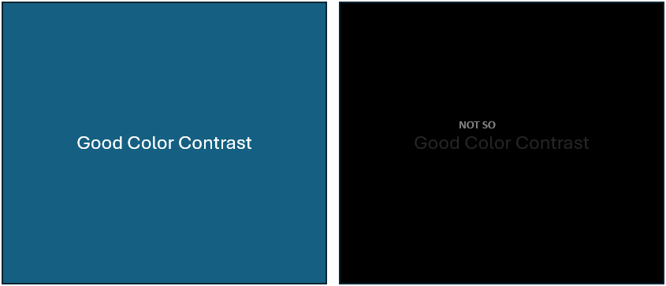

Color contrast plays a critical role in enhancing the readability and accessibility of instructional materials. Effective contrast between text and background colors ensures that learners can easily read the content without straining their eyes. High contrast combinations, such as dark text on a light background or vice versa, are recommended for legibility. Inadequate contrast, like light gray text on a white background, can make reading difficult and cause learners to disengage. Accessibility standards, such as the Web Content Accessibility Guidelines (WCAG), suggest maintaining a contrast ratio of at least 4.5:1 for normal text and 7:1 for larger text to ensure that content is accessible to all users, including those with visual impairments. Proper use of color contrast not only makes content more readable but also helps emphasize important information and guide the learner's focus to key elements of the material. Instructors should consider these principles when selecting colors for their designs.
